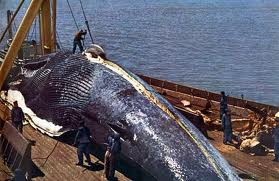
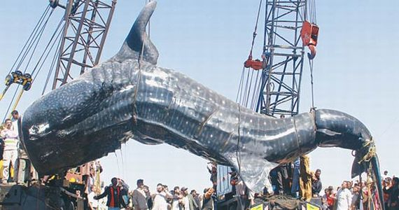
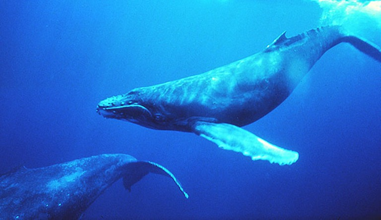
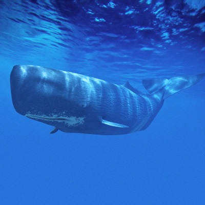

Durata de viata: Pana la 50 de ani
Unde traieste (mediu de viata): Oceane
Dieta: Carnivore
Clasa: Mamifere
Nume stiintific: Mysticeti
Ce mananca (mancarea principala): Pesti mici, crustacee, planctoni
Predatori: Oameni, rechini mari
Conform dovezilor stiintifice, balenele albastre (sau balenele uriase) sunt cele mai mari creaturi de pe Pamant dupa dinozauri. Dar partea trista este ca aceste creaturi uimitoare au fost desemnate ca animale pe cale de disparitie pentru o lunga perioada de timp si nu exista nicio idee de inmultire a numarului lor.
Balena albastra a fost inclusa pe Lista Rosie UICN (Uniunea Internationala pentru Conservarea Naturii si Resurselor Naturale) in anul 1960 dar se afla inca in pericol.
A existat o vreme cand balena albastra se regasea in fiecare ocean si mare adanca din lume. Dar sosirea erei vanatorii de balene a dus la scaderea numarului acestora atat de drastic incat balenele albastre sunt pe cale de disparitie astazi. Motivele vanatorii de balene sunt multiple.
Dimensiunile lor gigantice i-a determinat eronat pe marinari sa creada ca un astfel de animal mare ar putea fi o amenintare mortala in mare. De asemenea, erau vanate pentru grasimea si carnea acestui mamifer oceanic. La inceput, vanatoarea balenelor a fost limitata prin metode primitive si tehnici de vanatoare de balene, asadar prejudiciul adus acestei specii a fost controlabil.
Insa odata cu aparitia harpoanelor puternice, barcilor cu motor si pupelor rezistente din navele de vanatoare de balene, acest fenomen nedorit a luat proportii, balenele fiind vanate intr-un ritm alarmant. Numai in anul 1931 au fost ucise 29649 de balene.
Balenele albastre au, de asemenea, un ritm lent de reproducere. O femela naste doar o data la doi ani. Aceasta inseamna ca rata de disparitie a populatiei balenelor albastre nu poate fi contracarata de o crestere a numarului lor prin reproducere.Din anul 1966, Comisia internationala a Vanatorii de Balene a declarat balenele albastre animale protejate de lege si a interzis vanarea acestora in apele internationale. Dar numarul lor ramane scazut din cauza activitatilor oamenilor la adancime. Traficul maritim intens provoaca accidente in care balenele albastre sunt ranite de catre vasele de croaziera sau navele de marfa. In pescuitul la adancime se folosesc plase mari si traule in care balenele albastre se pot incalci si ineca.
Comisia internationala a Vanatorii de Balene a luat masuri pentru a proteja aceste creaturi minunate. Comitetele de experti au fost instruite sa lupte impotriva vanatorii de balene si implicit, a disparitiei acestora. Insa populatia lor ramane scazuta. Statistici recente indica un numar cuprins intre 12000 si 15000 de balene albastre ramase inca nevatamate.
Curiozitati:
- Exista pe tot globul aproximativ 78 de specii de balene.
- Balenele Beluga iubesc muzica.
- Casalotul poate trai mai bine de 200 de ani. 
- Balena albastra este cel mai mare animal de pe intregul glob, recordul fiind inregistrat de o femela din oceanul Antarctic cu o lungime de 30 metri si greutate aproximativa de 144 tone.
- Balenele albastre au gestatia de 10-12 luni, iar puii nou nascuti cantaresc in jur de 5.5-7.3 tone.
- Puiul bea de la mama sa in jur de 225 litri de lapte pe zi.
- Casalotul are cel mai mare creier din intregul regn animal, ajungand sa cantareasca 9 kg.
- Casalotii au somnul cel mai bizar, ei dormind in adancul oceanului cu pozitia corpului perfect verticala.
- In loc de dinti, balenele au niste formatiuni numite fanoane, ce se asemeana cu niste perii cu ajutorul carora filtreaza apa pentru a retine pestii.
- Avand plamanii gigantici, balenele respira la intervale de 15 minute, putand uneori sa isi tina respiratia chiar si o ora.
- Cand balena albastra expira jetul de apa, acesta poate atinge si 13 metri inaltime si totodata, poate fi auzit de la o distanta de 2 km.
- Femelele de balene cu cocoasa se imprietenesc si cand se reintalnesc, inoata impreuna, mananca si se odihnesc una in compania celeilalte.
- Balena sudica are cele mai mari testicule, ce cantaresc in jur de o tona.
- O balena urineaza aproximativ 970 de litri pe zi.
- Balenele cu cocoasa mananca doar in sezoanele calde, iar pe timp de iarna isi iau energia din rezervele de grasime. 
- Orca, numita si balena ucigasa este in topul pradatorilor marini.
- In unele culturi, balenele sunt vazute ca fiinte divine, fiind organizate funeralii pentru balenele esuate.
- Balenele pilot si balenele ucigase, desi au cuvantul "balena" in denumire, sunt considerate de fapt specii de delfini.
- Balenele ucigase, pe langa pisici de mare, foci, homari, lei de mare, pinguini, testoase si pasari marine, mananca si rechini albi, alte balene si ar manca chiar si ursi polari daca s-ar ivi ocazia.
- Balena ucigasa doarme uneori cu un ochi deschis.
- In August 2014 erau inregistrate 52 de balene ucigase tinute in captivitate pe tot globul.